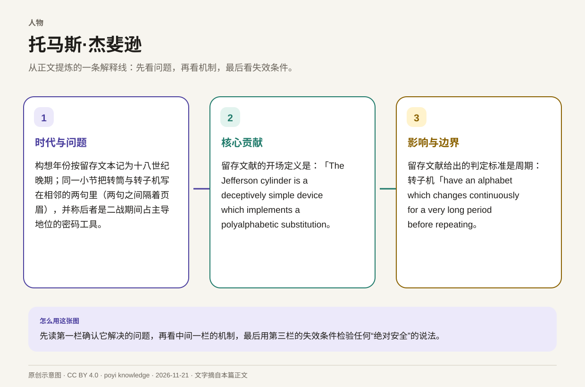

原理与机制
人物：托马斯·杰斐逊（Thomas Jefferson）。留存文献的开场定义是：「The Jefferson cylinder is a deceptively simple device which implements a polyalphabetic substitution cipher; conceived in the late 18th century, it had remarkable cryptographic」，其后接强度评价。同节 (i) 条又写道：「The Jefferson cylinder (Figure 7.3) implements a polyalphabetic substitution cipher while avoiding complex machinery, extensive user computations」。


为什么重要
关键在于它避开了什么：留存文本说该装置实现多表替换，同时避开复杂机械、大量人工计算与列表，因此多表字母表由装置本身承载，而不是由书面表列与人工换算承载。
应用与实例
复算记在 calculations 中：按留存件的实物描述建模——36 个圆盘、每盘周边分为 26 份、各盘以不同的随机次序刻写 26 个字母——把一个 36 字母明文块对齐基准线后，模型给出 26 行读数，基准行复原明文，其余 25 行互不相同且都不同于明文，正对应留存件印出的 "The 25 other parallel reference positions then each define a ciphertext"（该句在本副本被硬回车切成两行）；再以 4598 字母样本切出的 127 个整块，比较装置读法与留存件印出的全维吉尼亚式 ci = ei(mi)（下标 i 对 t 取模，t=36）所得密文，逐字母相同，且逆映射可完整复原 127 块。结构面检查的是：36 个盘两两不同；基准行加其余 25 行给出 26 个互不相同的候选；装置作用为恰好 36 张替换表并随块长重复（4562 个位置与其后第 36 位逐一比对）；由密文回读时，26 行中恰有一行是明文（381 例皆然），这正是留存件 "The other 25 reference positions are examined for a recognizable plaintext"（本副本把 examined 切成 exam- 与 ined 两行）所述做法可用的前提。密钥计数面复现留存件印出的数值：36!约为 3.72 × 10^41；本批次同时计算 25!，但留存件只点名该数而未印其十进制值，这一差别照此写明而非含糊带过。36 个盘的字母次序在本批次由固定种子生成：图 7.3 只印出五个盘行的片段，而非完整次序，因此本文不主张任何历史次序。
边界与攻击面
留存文献给出的判定标准是周期：转子机「have an alphabet which changes continuously for a very long period before repeating; this provides protection against Kasiski analysis and methods based on the index of coincidence」。留存文献只把该条件归于转子机，它关于转筒所印的是装置本身与密钥算术：36 个圆盘共轴、每盘周边分 26 份、各盘字母以不同随机次序刻写、以 36 字母块加密、其余 25 个平行基准位置各定义一个密文，并说明改变圆盘次序即改变密钥、圆盘次序共有 36!约 3.72 × 10^41 种；但它没有印出任何完整次序，因此该条目对具体次序不作断言。
历史与背景
构想年份按留存文本记为十八世纪晚期；同一小节把转筒与转子机写在相邻的两句里（两句之间隔着页眉），并称后者是二战期间占主导地位的密码工具。
逐步示例与核验
角色关系模型
只登记四类关系：教育/任职机构、公开文本或专利、参与的标准/机器/事件、可核同行评价。每条关系都要有来源；没有来源的师承、奖项和私生活不进入模型。
参考出处
- Wikipedia search entry for 托马斯·杰斐逊. https://zh.wikipedia.org/w/index.php?search=%E6%89%98%E9%A9%AC%E6%96%AF%C2%B7%E6%9D%B0%E6%96%90%E9%80%8A
- MacTutor History of Mathematics Archive, University of St Andrews. https://mathshistory.st-andrews.ac.uk/